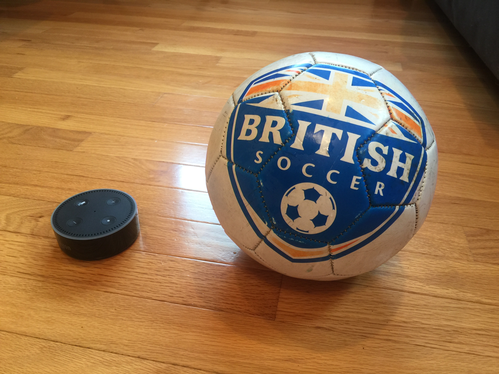

Premier League is an Alexa skill that lets you get information about English Premier League football (soccer for Americans). It is available in the US and the UK. Just ask your Alexa device to "enable Premier League". Then ask it to "open Premier League" and follow the voice prompts.
